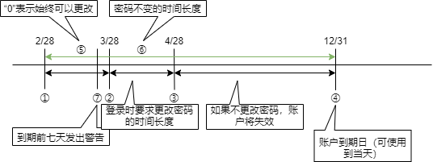

第四章 管理用户¶
4.1 注册、修改和删除用户¶
什么是用户¶
Linux 允许多个用户使用同一台主机。如前面的运行示例所示，本文档中的用户都是登录到同一主机并进行操作。登录可以是直接登录到主机的本地登录，也可以是通过网络的远程登录。但是，这两种登录都必须先创建一个可以登录到此主机的用户。

另外，如果登录的用户能够执行所有操作，则有可能会破坏系统。因此，第三章所述的权限限制对文件和目录的访问权限进行了限制，同时也限制了可执行程序的执行权限。
用户注册¶
要注册新用户，请使用 useradd 命令。此命令对普通用户不可用，必须以 root 用户身份运行。
可以在 /etc/passwd 和 /etc/shadow 文件中创建条目（用户信息）和起始目录。此外，由于用户必须属于一个或多个组，因此组信息将会写入 /etc/group 和 /etc/shadow 文件。稍后将做更详细的介绍。

useradd [选项] 用户名
选项 |
说明 |
|---|---|
-c 注释 |
指定注释 |
-d 起始目录 |
指定起始目录 |
-e 失效日期 |
指定账户到期日期。失效日期以 YYYY-MM-DD（年-月-日）格式指定，例如：2019-12-03 |
-f 天数 |
账户密码过期指定天数后将其设置为无效状态 |
-g gid（组ID） |
指定主组 |
-G gid（组ID） |
指定辅助组 |
-k skel目录路径 |
指定skel目录路径 |
-m |
创建起始目录（如果在 |
-M |
不创建起始目录 |
-s shell的路径 |
指定登录shell |
-u uid（用户ID） |
指定用户ID |
-D |
显示或设置默认值 |
以下是一个CentOS示例：如果在不使用选项的情况下运行useradd命令，则会基于缺省值创建一个用户。缺省值使用 /etc/default/useradd 文件中的设置。
# cat /etc/default/useradd
# useradd defaults file
GROUP=100
HOME=/home
INACTIVE=-1
EXPIRE=
SHELL=/bin/bash
SKEL=/etc/skel
CREATE_MAIL_SPOOL=yes
项目 |
说明 |
|---|---|
GROUP |
GROUP中指定的数字取决于 |
HOME |
在HOME值指定的目录下创建用户名称目录，并将其作为用户初始目录 |
INACTIVE |
密码到期后账户不在可用的天数。“-1”表示为无限期。 |
EXPIRE |
账户到期日期，没有则意味着无限期。 |
SHELL |
登录shell |
SKEL |
新用户起始目录模板。在新用户的起始目录中复制 |
CREATE_MAIL_SPOOL |
在 |
一下是创建普通用户 “sam” 的示例：
# useradd sam
# ls -d /home/sam
/home/sam ⬅ 在 /home 目录下创建了 sam 目录
如上面的示例结果所示，在执行 useradd 命令时未指定“-m”选项，但会创建初始目录。因为在 /etc/login.defs 文件中设置了 “CREATE_HOME yes”。因此，使用 useradd 命令创建用户时， /etc/skel 目录下的文件和目录会自动分发到用户的起始目录。
例如，系统管理员可以使用 bash 配置文件“.bash_profile”或“.bashrc”向用户分发配置文件。用户可以自定义这些文件。

注解
除了 useradd 命令外，还提供了 adduser 命令来创建用户。注意，CentOS 和 Ubuntu 的行为不同。
CentOS：链接到 useradd Ubuntu：使用与 useradd 命令不同的交互方式添加用户
useradd 命令将用户 sam 信息添加到 /etc/passwd 和 /etc/shadow 文件中。以下示例使用 tail 命令检车每个文件末尾的附加信息。
# tail -1 /etc/passwd
sam:x:1001:1001::/home/sam:/bin/bash
# tail -1 /etc/shadow
sam:!!:17725:0:99999:7:::
/etc/passwd 中添加了一个由七个字段组成的行，这些字段有六个“:”分割。如果在创建新用户后未设置密码，则 /etc/shadow 中的第二个字段为“!!”，反之则此字段设置为加密后的密码相应的值。
注解
有关 /etc/shadow 文件中字段的详细信息，请参见本章节“4-3 锁定账户并管理到期日期”。

设置密码¶
使用 passwd 命令设置密码。root用户可以在 passwd 命令的参数中设置和更改任何指定的用户的登录密码。普通用户只能使用 passwd 命令更改自己的密码。因此，普通用户使用 passwd 命令时不必指定用户。
passwd [选项] [用户名称]
选项 |
说明 |
|---|---|
-d |
密码过期：为过期的用户设置需要在下次登录前设置密码 |
-e |
删除密码。仅限root用户 |
-i 天数 |
指定密码到期和失效之间的天数。仅限root用户 |
-l |
锁定用户账户。仅限root用户 |
-n 天数 |
设置密码之前的最少天数。仅限root用户 |
-u |
解锁用户账户。仅限root用户 |
-w 天数 |
指定密码到期前的警告天数。仅限root用户 |
-x 天数 |
指定密码更改的最大天数。仅限root用户 |
如果没有指定选项，则以交互方式进行设置密码：
$ passwd sam
Changing password for sam.
Enter new UNIX password:
Retype new UNIX password:
# tail -1 /etc/passwd
sam:x:1001:1001:,,,:/home/sam:/bin/bash
# tail -1 /etc/shadow
sam:$6$SVzR22hq$calpTTiki.EnylxwWH9TNjhHj8awJPx4nVWJ5lpwjws.akX/jT7.pJWxPXV3V0FwrB2woR4NgRCykDwGNSsyY.:18317:0:99999:7:::
/etc/passwd 中条目内容保持不变。但是，/etc/shadow 中的第二个字段从“!!”无密码已变为加密密码。
注解
请注意，用户身份验证是由可加载身份认证模块（PAM）中的 pam_unix.so 模块执行的。
注解
有关PAM的详细信息，请参见第十章。
删除用户账户¶
要删除用户账户，请使用 userdel 命令。
userdel [选项] 用户名称
您可以通过在userdel命令中指定“-r”或“–remove”选项来删除用户的起始目录（及目录下的文件）。如果未指定“-r”或“–remove”选项，则只删除 /etc/passwd 和 /etc/shadow 文件中的条目，而起始目录则会保存。
4.2 注册、删除和修改组¶
什么是组¶
用户必须至少属于一个组。有两种类型的组：主组和辅助组。用户必须分配一个主组，辅助组则是可选的。
用户可以使用groups命令查看他们所属的组。通过在参数中指定用户名，可以查看用户所属的组。groups命令引用 /etc/groups 文件。
注解
有关 groups 命令的详细信息，请参见第三章。
以下是用户 yuko 和 sam 所属的组的 groups 命令的示例：
# groups sam
sam : sam
# groups yuko
yuko : yuko users
$ grep yuko /etc/passwd
yuko:x:1002:1002:,,,:/home/yuko:/bin/bash
# grep yuko /etc/group
users:x:100:yuko,ryo
yuko:x:1002:
创建组¶
要注册新组，请使用 groupadd 命令。此命令必须具有 root 权限才能运行。
groupadd [-g 组ID] 组名称
以下是root创建“pg”组的示例：
# groupadd pg
# tail -1 /etc/group
pg:x:1006:
# tail -1 /etc/gshadow
pg:!::
/etc/gshadow 是一个文件，用于设置用户为加入其未注册的组而运行newgrp命令时的密码。
删除组¶
要删除组，请使用groupdel命令，此命令必须具有root权限才能运行。groupdel命令的参数必须是组名。
groupdel 组名称
以下是root删除“pg”组的示例：
# groupdel pg
# tail /etc/group | grep pg
# tail /etc/gshadow | grep pg
变更所属组¶
更改用户的主组时，请使用 usermod 命令的 “-g” 选项。如果要将用户加入多个组（辅助组），请使用 useradd 命令的“-G”选项和 usermod 命令的“-G”选项。
# id sam ⬅ ①
uid=1001(sam) gid=1001(sam) groups=1001(sam) ⬅ ②
# grep users /etc/groups ⬅ ③
users:x:100:yuko,ryo ⬅ ④
# usermod -G users sam ⬅ ⑤
# id sam
uid=1001(sam) gid=1001(sam) groups=1001(sam),100(users) ⬅ ⑥
# grep users /etc/group ⬅ ⑦
users:x:100:yuko,ryo,sam ⬅ ⑧
① 显示用户 sam 信息
② 属于 sam(GID为1001) 作为主组
③ 显示用户组信息
④ ryo 和 yuko 属于 users 组
⑤ 用户 sam 作为辅助组加入 users
⑥ users 被添加到辅助组
⑦ 显示用户组信息
⑧ 添加了用户 sam
如果要更改组的用户已属于辅助组，则“-G”选项将替换为指定的组。如果要将多个组作为辅助组，请使用“-aG”选项。
# id sam ⬅ ①
uid=1001(sam) gid=1001(sam) groups=1001(sam),100(users) ⬅ ②
# usermod -G wheel sam ⬅ ③
# id sam
uid=1001(sam) gid=1001(sam) groups=1001(sam),10(wheel) ⬅ ④
# usermod -aG users sam ⬅ ⑤
# id sam
uid=1001(sam) gid=1001(sam) groups=1001(sam),10(wheel),100(users) ⬅ ⑥
① 显示用户 sam 信息
② 辅助组为users
③ 在“-G”选项中作为辅助组加入“wheel”
④ 辅助组由users替换为wheel
⑤ 使用“-aG”选项将users添加为辅助组
⑥ 作为辅助组加入 wheel 和 users
4.3 锁定账户并控制到期日期¶
失效日期¶
如果您要为特定用户发布一个仅在一段时间内可用的账户，可以通过设置明确到期日期来实现。
设置默认到期日期¶
如果要使用 useradd 命令设置或显示用户账户的默认值，请指定“-D”选项。使用“-f”选项作为参数指定密码到期与账户失效期间的天数。
useradd -D -f 天数
# grep INACTIVE /etc/default/useradd
INACTIVE=-1
# useradd -D -f 60
# grep INACTIVE /etc/default/useradd
INACTIVE=60
上面示例中的“useradd -D -f 60”命令将更新 /etc/default/useradd 文件中 INACTIVE 的值。更新前默认值设置为“-1”（永不过期）。
您还可以指定失效日期。默认情况下，EXPIRE 没有设置值，因此它是无限期的。“-e”(expire)选项使用 YYYY/MM/DD 格式作为参数设置过期日期的默认值。
useradd -D -e 日期
# grep EXPIRE /etc/default/useradd
EXPIRE=
# useradd -D -e 2020/12/31
# grep EXPIRE /etc/default/useradd
EXPIRE=2020/12/31
设置现有用户的到期日期¶
使用chage命令设置过期日期和密码过期日期。
要更改现有用户的过期日期，请使用“usermod -e”或使用chage命令运行“chage -E”。
chage [选项[参数]] 用户名称
选项 |
说明 |
/etc/shadow（对应的字段编号） |
|---|---|---|
-l |
显示账户和密码到期信息，此选项对普通用户可用 |
|
-d |
已设置密码的上次更新日期。以YYYY/MM/DD格式或自1970年1月1日起的时间戳指定年月日的天数 |
3 |
-m |
设置密码更改时间间隔的最短天数 |
4 |
-M |
设置允许密码保持不变的最长天数 |
5 |
-W |
设置密码更改前警告的天数 |
6 |
-I |
密码更改过期后账户不再可用的宽限天数。此宽限期要求用户登录时更改密码 |
7 |
-E |
设置账户的到期日期（自到期日期后的第二天起不再可用）。以YYYY/MM/DD格式或自1970年1月1日起的时间戳指定年月日的天数 |
8 |
现有用户的过期日期已在 /etc/shadow 文件中注册。
字段编号 |
说明 |
|---|---|
1 |
用户名称 |
2 |
加密密码 |
3 |
从1970年1月1日到上次更改密码的天数 |
4 |
密码可更改前的天数 |
5 |
必须更改密码之前的天数 |
6 |
密码失效前警告用户的天数 |
7 |
密码到期后账户失效的天数 |
8 |
从1970年1月1日起到账户不可用的天数 |
9 |
保留字段 |
下面的示例按日期设置到期日：
# grep yuko /etc/shadow
yuko:$6$SVzR22hq$calpTTiki.EnylxwWH9TNjhHj8awJPx4nVWJ5lpwjws.akX/jT7.pJWxPXV3V0FwrB2woR4NgRCykDwGNSsyY.:18317:0:99999:7:::
# date
Fri Feb 28 13:14:29 CST 2020
# chage -E 2020/12/31 yuko
# grep yuko /etc/shadow
yuko:$6$SVzR22hq$calpTTiki.EnylxwWH9TNjhHj8awJPx4nVWJ5lpwjws.akX/jT7.pJWxPXV3V0FwrB2woR4NgRCykDwGNSsyY.:18317:0:99999:7::18627:
在上面的运行结果中，/etc/shadow 中的第八个字段已从空（从不过期）更改为18627。1970年1月1日的18627天后时2020年12月31日。在本例中，账户可使用到到期日期2020年12月31日。到了2021年1月1日，您将收到以下无法登录内容的消息：
# date
Fri Jan 01 13:25:03 CST 2021
# ssh yuko@192.168.1.111
yuko@192.168.1.111's password:
Your account has expired; please contact your system administrator
Connection closed by 192.168.1.111 port 22
① 验证是否已经过期
② 用户 yuko 使用 ssh 尝试登录到 “192.168.1.111” 主机
③ 提示了因过期而无法登录的消息
确认密码到期时间¶
要检查密码到期日期，请以“chage -l 用户名”的形式运行chage命令。以下示例检查用户ryo的账户可密码的到期日期。
# date
Fri Feb 28 13:31:11 CST 2020 ⬅ 确认当前日期
# chage -l ryo
Last password change : Feb 28, 2020
Password expires : never
Password inactive : never
Account expires : never
Minimum number of days between password change : 0
Maximum number of days between password change : 99999
Number of days of warning before password expires : 7
# chage -M 60 ryo ⬅ 设置允许密码保持不变的最长天数（60天）
# chage -l ryo
Last password change : Feb 28, 2020
Password expires : Apr 28, 2020 ⬅ 60天后密码到期
Password inactive : never
Account expires : never
Minimum number of days between password change : 0
Maximum number of days between password change : 60
Number of days of warning before password expires : 7
# chage -I 30 ryo ⬅ 设置超过密码更改期限和账户不可用前的宽限日期（30天）
# chage -l ryo
Last password change : Feb 28, 2020
Password expires : Apr 28, 2020
Password inactive : May 28, 2020 ⬅ 30天后重置密码
Account expires : never
Minimum number of days between password change : 0
Maximum number of days between password change : 60
Number of days of warning before password expires : 7
# chage -E 2020/12/31 ryo ⬅ 设置账户到期日期（2020/12/31）
# chage -l ryo
Last password change : Feb 28, 2020 ①
Password expires : Apr 28, 2020 ②
Password inactive : May 28, 2020 ③
Account expires : Dec 31, 2020 ④ ⬅ 2020/12/31账户到期
Minimum number of days between password change : 0 ⑤
Maximum number of days between password change : 60 ⑥
Number of days of warning before password expires : 7 ⑦
将上述内容在下图中做描述：
如果您在上图中的②~③期间尝试登录，请确认系统提示您更改密码的要求。密码过期后，在账户到期宽限期内，登录时将提示您更改密码，如下所示：
# date
Fri Feb 28 14:30:49 CST 2020
# ssh ryo@192.168.1.219
ryo@192.168.1.219's password:
You are required to change your password immediately (password aged)
Last login: Tue Apr 28 00:00:07 2020 from 192.168.1.184
WARNING: Your password has expired.
You must change your password now and login again!
Changing password for user ryo.
Changing password for ryo.
(current) UNIX password:
New password:
Retype new password:
passwd: all authentication tokens updated successfully.
Connection to 192.168.1.219 closed.
然后，您可以尝试使用新密码登录。
另外，如果超过了可以更改密码的宽限期，将显示与以下相同账户到期的信息，则无法登录。
# ssh ryo@192.168.1.219
ryo@192.168.1.219's password:
Your account has expired; please contact your system administrator
Connection closed by 192.168.1.219 port 22
更改密码到期日期¶
除了chage命令外，passwd命令也允许您更改密码到期日期和密码到期宽限期限。usermod命令允许您更改密码失效前的宽限期。用于设置和更改密码和账户到期日期的命令和选项包括：
命令 |
maxdays（密码保持不变的最长有效天数） |
inactive（密码到期前的宽限天数） |
expiredate（账户到期日期） |
|---|---|---|---|
useradd |
（有关缺省值，请参见 |
useradd -D -f |
useradd -D -e |
useradd -f |
useradd -e |
||
usermod |
- |
usermod -f |
usermod -e |
chage |
chage -M |
chage -l |
chage -E |
passwd |
passwd -x |
passwd -i |
- |
禁止登录¶
每个用户的登录shell都在 /etc/passwd 文件中注册。
通过将登录shell指定为 /bin/false，可以防止通过交互式登录。false只会返回返回值“1”（false:假）而不执行任何操作命令。 /bin/false 强制注销，因为用户登录时将执行false命令。
还可以将登录shell设置为 /sbin/nologin 。nologin是一个命令，用于显示当前账户不可用的消息。当用户登录时，将执行nologin命令，显示消息“This account is currently not available.”，然后将其注销登录。
您可以使用 usermod 命令或 chsh(change shell) 来更改登录shell。
usermod -s shell路径 用户名称
chsh -s shell路径 用户名称
在以下示例中，usermod 命令将用户mana的登录shell更改为 /sbin/nologin，chsh命令将用户 ryo 的登录shell更改为 /bin/false。
# grep mana /etc/passwd ⬅ ①
mana:x:1002:1002::/home/mana:/bin/bash ⬅ ②
# usermod -s /sbin/nologin mana ⬅ ③
# grep mana /etc/passwd
mana:x:1002:1002::/home/mana:/sbin/nologin ⬅ ④
# grep ryo /etc/passwd
ryo:x:1001:1001::/home/ryo:/bin/bash ⬅ ⑤
# chsh -s /bin/false ryo ⬅ ⑥
Changing shell for ryo.
chsh: Warning: "/bin/false" is not listed in /etc/shells.
Shell changed.
# grep ryo /etc/passwd
ryo:x:1001:1001::/home/ryo:/bin/false
① 以mana为关键字搜索文件“/etc/passwd”
② 用户mana的shell为“/bin/bash”
③ 将登录shell更改为“/sbin/nologin”
④ 验证是否已更改为“/sbin/nologin”
⑤ 用户ryo的shell为“/bin/bash”
⑥ 将登录shell更改为“/bin/false”
⑦ 如果“/bin/false”没有在/etc/shells中注册，则会发出警告
⑧ 验证是否已经更改为“/bin/false”
在ssh中，mana和ryo尝试登录到192.168.1.219。输入密码后，您将看到强制断开链接。
$ ssh mana@192.168.1.219
mana@192.168.1.219's password:
This account is currently not available.
Connection to 192.168.1.219 closed.
$ ssh ryo@192.168.1.219
ryo@192.168.1.219's password:
Last failed login: Wed Jun 30 00:00:13 CST 2021 from 192.168.1.184 on ssh:notty
There were 2 failed login attempts since the last successful login.
Last login: Tue Jun 30 00:00:19 2020 from 192.168.1.184
Connection to 192.168.1.219 closed.
锁定用户¶
要锁定特定用户的账户以防止其登录，请运行usermod或passwd命令。“usermod -L”是在 /etc/shadow 文件中加密密码的内容开头加入“!”的相应参数。“usermod -U”是消除 /etc/shadow 文件中加密密码的开头内容“!”的相应参数。“passwd -l”是在 /etc/passwd 文件中的加密密码的开头添加“!!”的相应参数，“passwd -u”是在 /etc/passwd 文件中的加密密码的开头删除“!!”的相应参数。
usermod -L 用户名称
passwd -l 用户名称
usermod -U 用户名称
passwd -u 用户名称
以下是使用“usermod -L”锁定用户yuko的命令示例：
# grep yuko /etc/shadow
yuko:$6$uHesPsWv$rZheN0ujVXaGd1lNVdrX816pvgKC2oIroXISa2AcEIxgBKf1PNHyGjzUu90fyi1gq2WgIJH/CRivyBbzs0xYv.:18320:0:99999:7:::
# usermod -L yuko
# grep yuko /etc/shadow
yuko:!$6$uHesPsWv$rZheN0ujVXaGd1lNVdrX816pvgKC2oIroXISa2AcEIxgBKf1PNHyGjzUu90fyi1gq2WgIJH/CRivyBbzs0xYv.:18320:0:99999:7:::
锁定后再登录时显示的消息与密码错误时显示的消息相同。
以下是用户yuko在ssh中尝试登录并输入正确的密码，但系统会提示您重新输入密码，最终确保您无法登录。
$ ssh yuko@192.168.1.219
yuko@192.168.1.219's password:
Permission denied, please try again.
yuko@192.168.1.219's password:
Permission denied, please try again.
yuko@192.168.1.219's password:
yuko@192.168.1.219: Permission denied (publickey,gssapi-keyex,gssapi-with-mic,password).
禁止普通用户登录¶
此外，如果root创建 /etc/nologin 文件，则普通用户将无法再登录。如果将消息存储在/etc/nologin中，则登录时将显示该消息，并且用户将被拒绝登录。但是，root用户还可以登录。删除此文件后，它将恢复正常状态。
以下是新的 /etc/nologin 文件。
# ll /etc/nologin
ls: cannot access /etc/nologin: No such file or directory
# touch /etc/nologin
# vim /etc/nologin
Disable current login!
以下是用户yuko尝试登录时显示的消息，最终确认无法登录。
$ ssh yuko@192.168.1.219
yuko@192.168.1.219's password:
Disable current login!
Connection closed by 192.168.1.219 port 22
4.4 检查登录历史记录¶
查看登录历史记录¶
last 命令显示最近登录的用户的列表。此命令引用 /var/log/wtmp 文件。/var/log/wtmp 包含用户的登录历史记录。
# last
root pts/0 192.168.1.184 Fri Feb 28 16:23 still logged in
root pts/0 192.168.1.184 Fri Feb 28 16:11 - 16:12 (00:00)
root pts/0 192.168.1.184 Fri Feb 28 16:07 - 16:10 (00:03)
root pts/0 192.168.1.184 Fri Feb 28 15:56 - 16:01 (00:05)
ryo pts/0 192.168.1.184 Fri Feb 28 15:26 - 15:26 (00:00)
ryo pts/0 192.168.1.184 Fri Feb 28 15:26 - 15:26 (00:00)
mana pts/0 192.168.1.184 Fri Feb 28 15:26 - 15:26 (00:00)
root pts/0 192.168.1.184 Wed Jun 30 00:24 - 15:25 (-487+-8:-59
root pts/0 192.168.1.184 Tue Jun 30 00:00 - 00:00 (364+23:59)
ryo pts/0 192.168.1.184 Tue Jun 30 00:00 - 00:00 (00:00)
root pts/0 192.168.1.184 Thu Apr 30 00:02 - 00:00 (60+23:57)
ryo pts/0 192.168.1.184 Thu Apr 30 00:00 - 00:00 (00:00)
root pts/0 192.168.1.184 Tue Apr 28 00:00 - 00:00 (1+23:59)
ryo pts/0 192.168.1.184 Tue Apr 28 00:00 - 00:00 (00:00)
root pts/0 192.168.1.184 Sat Mar 28 00:00 - 00:00 (30+23:59)
ryo pts/0 192.168.1.184 Sat Mar 28 00:00 - 00:00 (00:00)
ryo pts/0 192.168.1.184 Fri Feb 28 14:31 - 00:00 (28+09:28)
root pts/0 192.168.1.184 Fri Feb 28 13:30 - 14:30 (00:59)
root tty1 Fri Feb 28 13:30 still logged in
reboot system boot 3.10.0-1062.el7. Fri Feb 28 13:29 - 16:24 (02:54)
root tty1 Wed Feb 26 15:41 - 15:43 (00:01)
reboot system boot 3.10.0-1062.el7. Wed Feb 26 15:41 - 15:43 (00:01)
root tty1 Wed Feb 26 00:00 - 00:01 (00:01)
root pts/0 192.168.1.184 Tue Feb 25 23:49 - down (00:11)
reboot system boot 3.10.0-1062.el7. Tue Feb 25 23:49 - 00:01 (00:11)
root pts/1 192.168.1.188 Tue Feb 25 23:29 - 23:47 (00:17)
root pts/1 192.168.1.188 Tue Feb 25 18:34 - 18:55 (00:21)
root pts/0 192.168.1.188 Tue Feb 25 18:29 - 23:47 (05:17)
root tty1 Tue Feb 25 18:27 - 23:47 (05:19)
reboot system boot 3.10.0-1062.el7. Tue Feb 25 18:27 - 23:47 (05:19)
root pts/0 192.168.1.185 Tue Feb 25 17:26 - 17:27 (00:00)
root tty1 Tue Feb 25 17:26 - 17:30 (00:04)
reboot system boot 3.10.0-1062.el7. Tue Feb 25 17:23 - 17:30 (00:06)
root tty1 Tue Feb 25 17:22 - 17:23 (00:00)
reboot system boot 3.10.0-1062.el7. Tue Feb 25 17:16 - 17:23 (00:06)
wtmp begins Tue Feb 25 17:16:28 2020
查看登录用户¶
w命令，who命令显示当前登录用的列表。这些命令引用 /var/run/utmp 文件。这两个命令都显示登录用户名（USER），终端名称（TTY）和登录时间（LOGIN@)。w命令还显示空闲时间（IDLE：用户未执行操作的时间）和当前进程（WHAT：用户当前正在执行的进程）。
# w
16:39:31 up 0 min, 3 users, load average: 0.39, 0.11, 0.04
USER TTY FROM LOGIN@ IDLE JCPU PCPU WHAT
root tty1 16:39 19.00s 0.01s 0.01s -bash
root pts/0 192.168.1.184 16:39 3.00s 0.03s 0.02s w
mana pts/1 192.168.1.184 16:39 5.00s 0.01s 0.01s -bash
# who
root tty1 Feb 28 16:39
root pts/0 Feb 28 16:39 (192.168.1.184)
mana pts/1 Feb 28 16:39 (192.168.1.184)